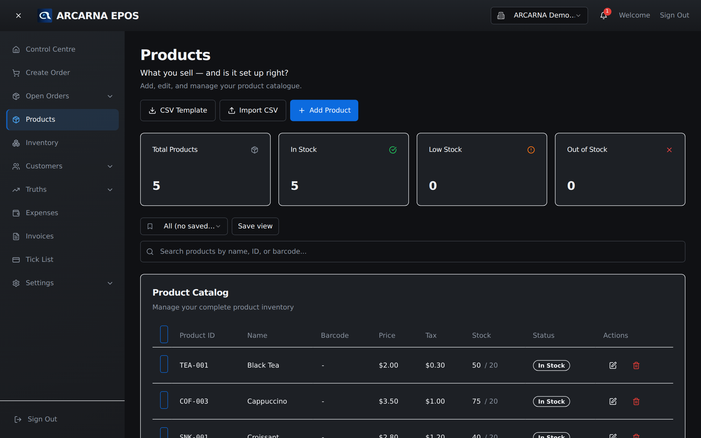
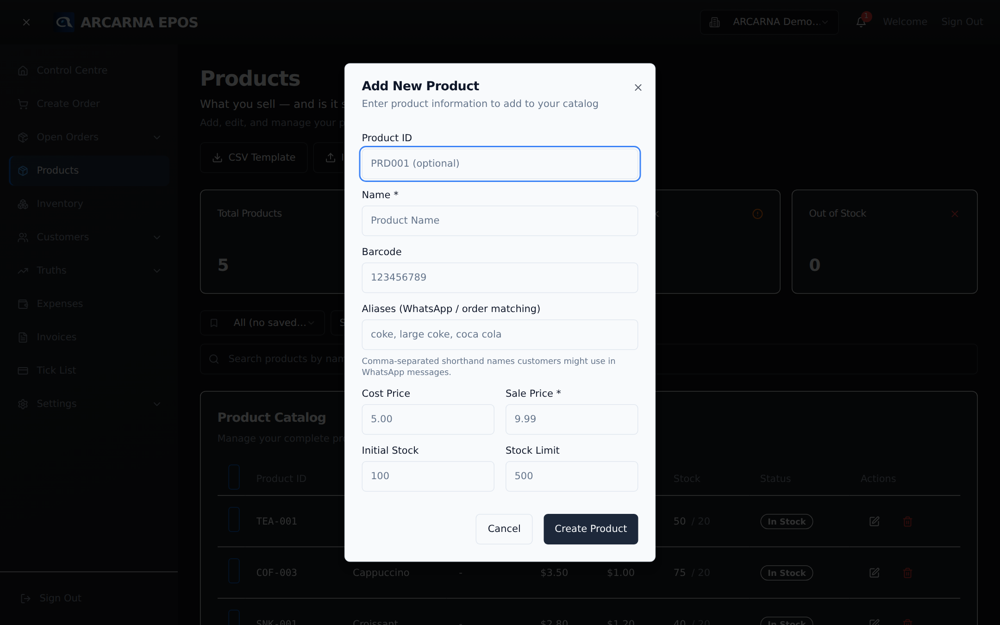

Staff training manual
Staff training manual
Building and keeping the product list — the things you sell, their prices, and how much you have. Get this right and the till, stock and Truths all follow. MANAGER
The screen
The Products screen
Open Products from the menu. Every product you sell lives here: its name, its code, its price, and how many you have in stock. The till (Section 3) can only sell what has been set up here, so this is where the working day really begins.

Adding stock lines
Adding a product
Each product is defined by a few fields. Take a moment over the price fields — they are what make your profit numbers honest later.
- On the Products screen, select Add product.
- Name — what staff and customers will recognise, e.g. "Cappuccino".
- Product code — your own short code (also called a SKU), e.g. "COF-003". It must be unique. It's how the product is found by scan or search.
- Cost price — what the product costs you to buy or make. This is used to work out profit, so enter it honestly even if it's an estimate.
- Sale price — what the customer pays. The difference between sale and cost is your margin.
- Stock — how many you have right now.
- Reorder level — the point at which arcarna should flag the line as running low, so it can warn you before you sell out.
- Barcode (optional) — if the product has one, add it so it can be scanned at the till.
- Save. The product is now sellable at the till.

Keeping it current
Editing a product
Prices change, suppliers change, and stock moves. To update a product, open it from the list and change the field you need.
- Price change — open the product, edit the sale (or cost) price, and save. New sales use the new price straight away; past orders keep the price they were sold at.
- Stock adjustment — where you've counted stock and it differs from the figure on screen, correct it here so the shelf and the system agree.
Retiring lines
Removing a product
When you stop selling something, retire it rather than worrying about losing its history. Removing a product takes it off the till, but the orders that already contained it — and the Truths built from them — stay intact.
- Open the product from the list.
- Choose to remove or retire it.
- It disappears from the till. Its past sales remain in the record, so your history and reporting are unaffected.
Doing it in bulk
Importing many products at once
Setting up for the first time, or adding a big delivery of new lines? arcarna can import a spreadsheet of products rather than typing them one by one. Prepare a file with a column per field (name, code, cost price, sale price, stock, barcode), then use the import option on the Products screen and match your columns to the fields. Check the preview before confirming — it's much easier to fix a spreadsheet than to unpick a bad import.